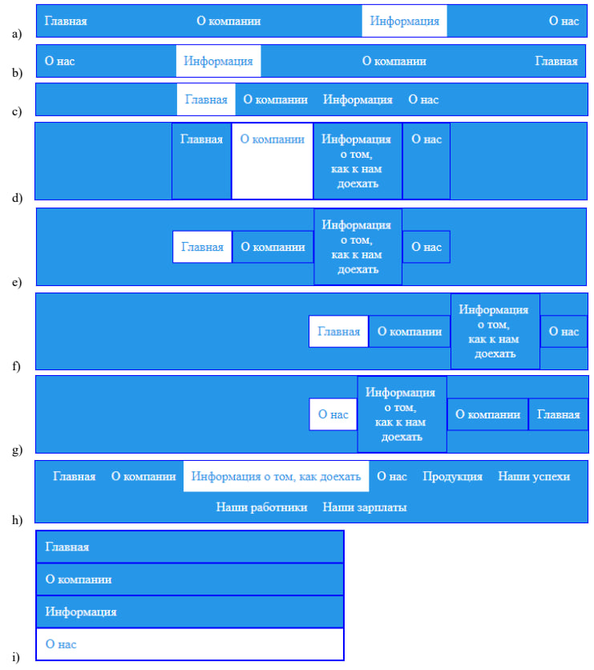
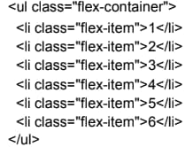

1
Зробити меню за зразком

2
Є список:

Необхідно рівномірно розподілити їх по горизонталі, щоб при зміні розміру вікна браузера все виглядало добре (без @ media-запитів!).
3
Створити вирівняну по правому краю навігацію в самому верху сайту:
Перейти
4
Створити орієнтований на мобільні пристрої триколончатий макет з повноширинною шапкою і підвалом:
Перейти